A little signal. A lot of character.
Meet your
curious companion.
A round little monster who learns with you.
One mood light. One golden heart. Always a little curious.
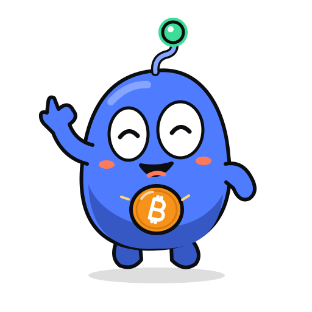
ONE ANTENNA / FOUR SIGNALS01 / Built to turn.
Soft pebble silhouette · asymmetric eyes · tiny mitten limbs
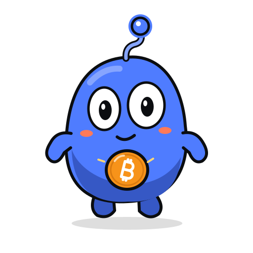
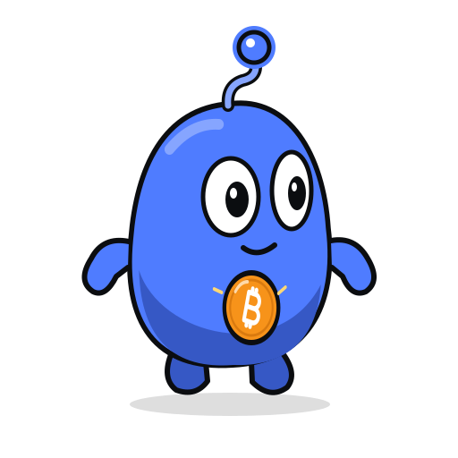
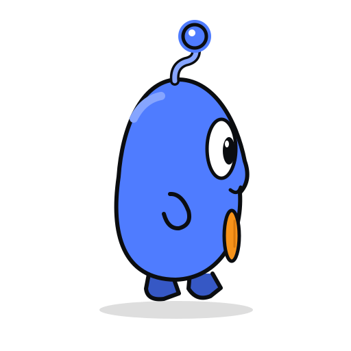
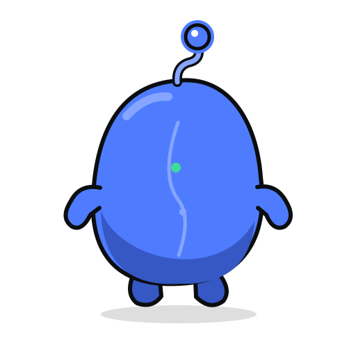
02 / A face for every moment.
Light-background proof · six distinct expressions
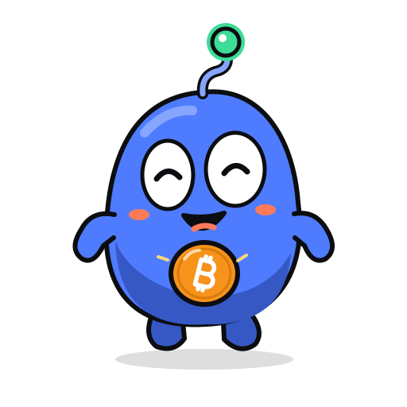
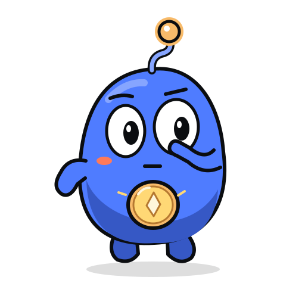
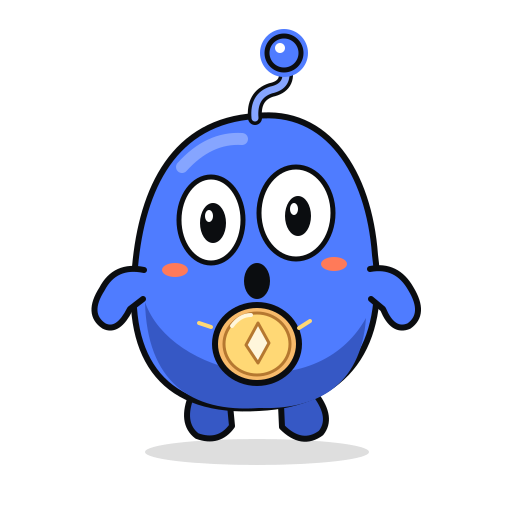
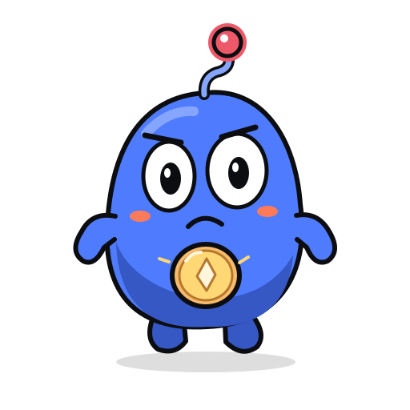
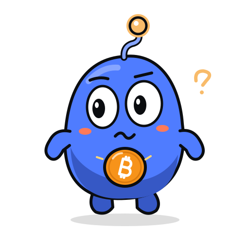
03 / Ready to help.
Six teaching gestures · editable props
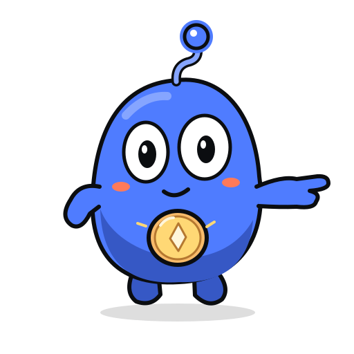
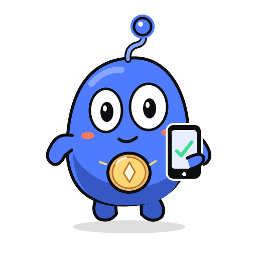
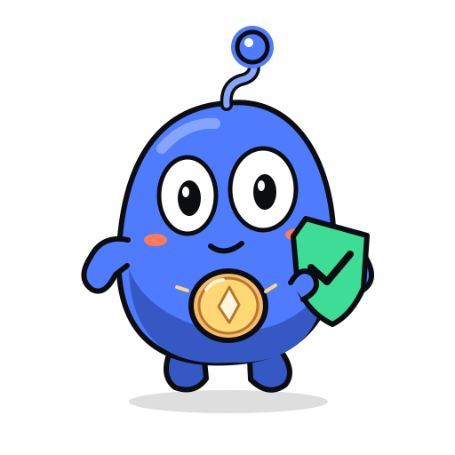
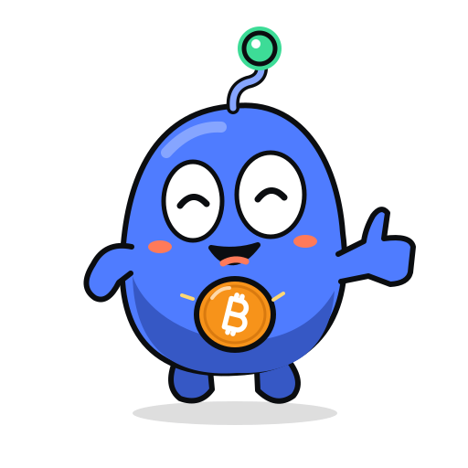
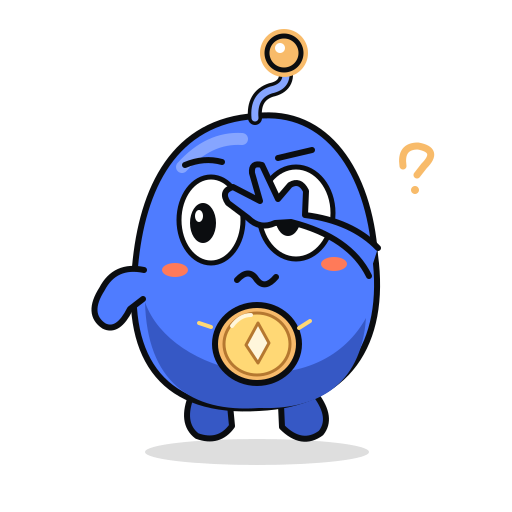
Three names to explore.
Short, vowel-led proposals. Naming and native-language review remain open.
Nexubonek-SOO-bo · Nexu + a soft rounded ending
Bopinubo-PEE-noo · a buoyant little bounce
Pibolupee-BO-loo · playful, gentle rhythm